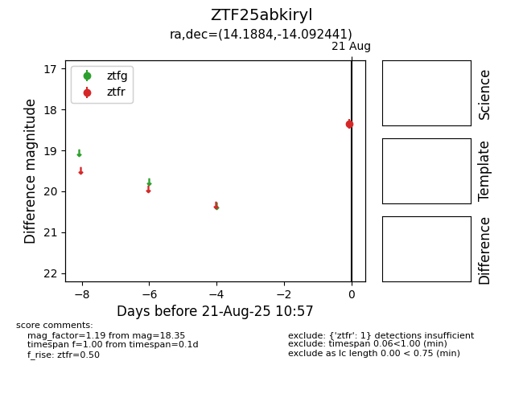

Target ZTF25abkiryl at 2025-08-21 10:57, see:
FINK: fink-portal.org/ZTF25abkiryl
Lasair: lasair-ztf.lsst.ac.uk/objects/ZTF25abkiryl
ALeRCE: alerce.online/object/ZTF25abkiryl
alt names
ZTF25abkiryl (ztf,alerce)
coordinates:
equatorial (ra, dec) = (14.1884,-14.09244)
galactic (l, b) = (128.6298,-76.90535)
photometry
last ztfr=18.35
1 ztfr detections
